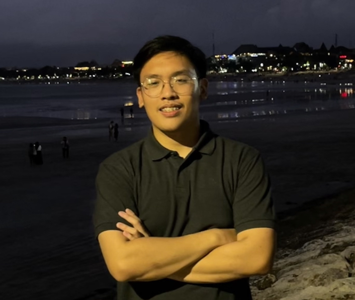

Muhammad Daffa Benazicco
Mahasiswa Sistem Informasi | UI/UX Designer | Leadership Enthusiast
Profil
Mahasiswa Sistem Informasi yang tertarik dalam pengembangan teknologi dan optimalisasi proses bisnis. Memiliki keterampilan dalam pemrograman, koordinasi tim, dan komunikasi yang efektif.
Pendidikan
- Telkom University - S1 Information System (2023 - Sekarang)
- Daarul Quran International Boarding School (2021 - 2023)
- Alexandria Islamic School (2020 - 2021)
Pengalaman Organisasi
- Ketua Pelaksana PKKMB Prodi S1 Sistem Informasi (2024)
- Panitia Pemilihan Umum HMSI (2024) - Bidang Publikasi dan Dokumentasi
- Persatuan Silat Daarul Quran - Anggota
- Student Council of Alexandria - Anggota
- Kepanitiaan First Meet Sistem Informasi 47
Skill
- UI/UX Design
- Graphic Design (Photoshop, Video Editing)
- Public Speaking
- Leadership
- Programming (Python, Java)